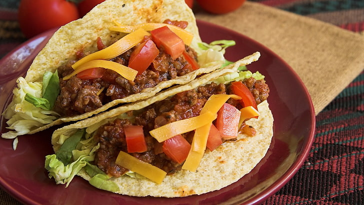

A taco is a flavorful Mexican dish featuring a warm tortilla filled with seasoned meat, veggies, cheese, and toppings.
Ingredients:
- 1 can (15 oz) black beans, drained and rinsed
- 1 tablespoon vegetable oil
- 1 small onion, finely chopped
- 1 red bell pepper, diced
- 1 zucchini, diced
- 1 packet taco seasoning mix (about 1 oz) or homemade seasoning (see below)
- 1/2 cup water
- Taco shells or tortillas (store-bought)
- 1 cup shredded lettuce
- 1 cup diced tomatoes
- 1 cup shredded cheese (cheddar or Mexican blend)
- 1/2 cup sour cream (optional)
- Salsa (optional)
- Fresh cilantro for garnish (optional)
Homemade Taco Seasoning (Optional):
- 1 tablespoon chili powder
- 1 teaspoon cumin
- 1 teaspoon paprika
- 1/2 teaspoon garlic powder
- 1/2 teaspoon onion powder
- 1/2 teaspoon dried oregano
- 1/4 teaspoon salt
- 1/4 teaspoon black pepper
Instructions:
- Cook the Vegetables:
Heat the vegetable oil in a large skillet over medium-high heat.
Add the chopped onion and cook for about 2 minutes, until it’s soft and translucent.
Add the diced red bell pepper and zucchini. Cook for another 5 minutes, stirring occasionally, until the vegetables are tender.
- Add Beans and Seasoning:
Stir in the black beans.
If using a taco seasoning packet, add it now. If using homemade seasoning, mix the seasoning ingredients together and add them to the skillet.
Pour in 1/2 cup of water and stir well to combine everything. Let it simmer for about 5 minutes, or until the mixture thickens and most of the water evaporates. Stir occasionally.
- Prepare the Toppings:
While the mixture is cooking, prepare your taco toppings. Dice the tomatoes, shred the lettuce, and grate the cheese if needed.
- Warm the Taco Shells:
If using taco shells, warm them according to the package instructions (usually 5 minutes in a preheated oven at 350°F or 2 minutes in the microwave).
- Assemble the Tacos:
Spoon the bean and vegetable mixture into each taco shell or tortilla.
Top with shredded lettuce, diced tomatoes, and shredded cheese.
Add a dollop of sour cream and salsa if you like, and garnish with fresh cilantro if desired.
- Serve and Enjoy:
Serve your tacos immediately while they’re warm and enjoy!
And that’s it! You’ve made a quick and tasty taco dish. Enjoy it as a main course or as a side with your favorite proteins and vegetables.